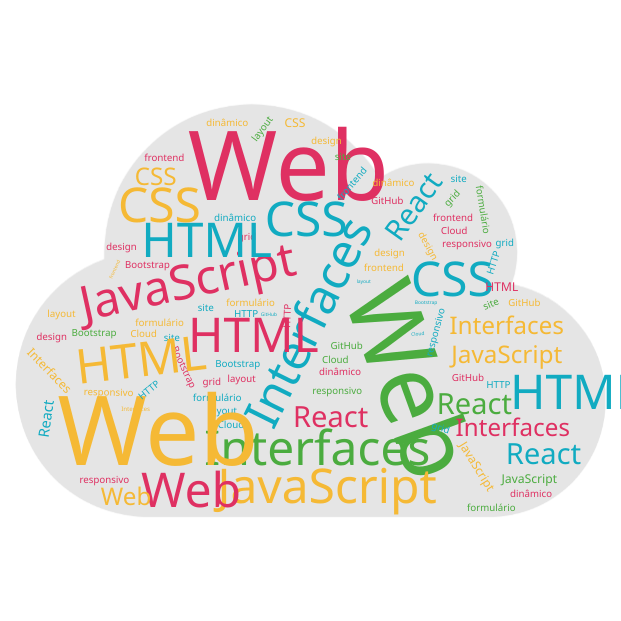

Guilherme Quartin Coelho
"Always remember, your focus determines your reality"
Desenvolvimento de Interfaces Web
Nesta unidade curricular exploramos as principais tecnologias de Desenvolvimento de Interfaces Web, desde a estruturação de páginas com HTML até à criação de interfaces dinâmicas com JavaScript, React e Next.js.
Ao longo do semestre, aplicamos estes conhecimentos em projetos práticos, desenvolvendo páginas web modernas e responsivas.

Projetos/Labs
Explora os projetos desenvolvidos ao longo da unidade curricular